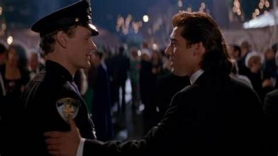
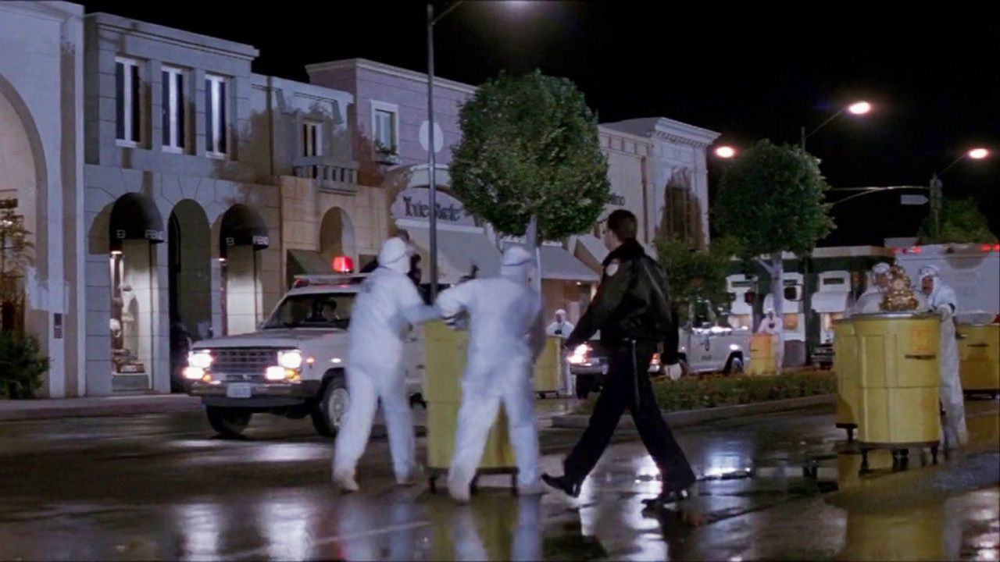

1992. Mon grand-père avait enregistré ça sur Canal+.
Une cassette parmi d'autres dans sa collection maison. Pas de jaquette découpée cette fois — juste son écriture sur l'étiquette, une date, un titre.
J'avais neuf ans.
Je ne savais pas encore ce que voulait dire série B, budget limité, direct-to-video. Je savais juste qu'à un moment dans ce film, il y avait un tank.
Un vrai tank.
Dans les rues de Beverly Hills.
J'ai su immédiatement que ce film était fait pour moi.
Ce soir, on rembobine la cassette.

Ken Wahl — The Taking of Beverly Hills, 1991
La Prise de Beverly Hills.
1991. Réalisé par Sidney J. Furie. Avec Ken Wahl, Matt Frewer, Harley Jane Kozak et Robert Davi.
Un film produit par Nelson Entertainment, distribué par Columbia Pictures après une sortie en salles confidentielle. Budget entre 15 et 25 millions de dollars. Box-office américain : 939 000 dollars.
Les chiffres ne racontent pas tout.
Ce qu'on trouve à l'intérieur surprend. Un film qui connaît ses limites et qui les transforme en force — rythmé, efficace, avec un sens de l'escalade qui ferait rougir des productions au budget dix fois supérieur.
Un Die Hard de série B.
Mais un Die Hard qui fonctionne.
1991.
Le marché du direct-to-video est en pleine ébullition. Dans le sillage de Die Hard — sorti en 1988 et devenu immédiatement le modèle de tout un sous-genre — des dizaines de productions tentent de reproduire la formule. Un homme seul, un lieu fermé, une menace extérieure, une escalade progressive.
La plupart échouent. Trop cheap, trop prévisibles, trop conscientes de leurs limitations pour les dépasser.
La Prise de Beverly Hills fait partie des exceptions.
Sidney J. Furie n'est pas un inconnu. Lady Sings the Blues, Iron Eagle. Un réalisateur qui sait construire une séquence, gérer un budget, tirer le maximum de ce qu'il a.
Et ce qu'il a, c'est Ken Wahl — révélé par la série Wiseguy (Un flic dans la mafia), l'un des polars télévisés les plus respectés de la fin des années 80. Un acteur crédible, ancré dans le réel, avec une présence naturelle que le cinéma n'a jamais vraiment su exploiter.
Le film est une tentative de transition vers le grand écran. Elle aurait dû fonctionner.
Et dans un coin du tournage, une certaine Pamela Anderson fait sa toute première apparition au cinéma — en cheerleader, non créditée. 1991 avait encore des surprises.

La Prise de Beverly Hills, 1991
Boomer Hayes est une star du football américain.
Un homme qui n'a rien à faire dans cette histoire — sauf qu'il se retrouve au mauvais endroit au mauvais moment. Le soir où un groupe d'anciens policiers corrompus utilise un faux déversement de produits chimiques pour vider Beverly Hills de ses habitants et piller la ville la plus riche d'Amérique.
Tout le monde évacue. Boomer reste.
Ce qui s'ensuit est exactement ce qu'on espère — et un peu plus. Des cascades, des explosions, des poursuites en voiture, un duo improbable entre un quarterback et un flic repenti.
Et à un moment, un tank.
Un vrai tank dans les rues de Beverly Hills.
Le film joue avec son décor — ses manoirs, ses rues impeccables, ses habitants déconnectés de toute réalité — et tire de ce contraste une énergie qui allège sans jamais trahir l'action.
C'est exactement ce que ça promettait. Et c'est déjà beaucoup.
Ce film sait exactement ce qu'il est.
C'est sa force principale — et c'est ce qui le distingue de la plupart des productions qui ont tenté de reproduire la formule Die Hard à la même époque.
La Prise de Beverly Hills ne cherche pas à être plus grand qu'il n'est. Il ne prétend pas à une profondeur qu'il n'a pas. Il prend son prémisse — Beverly Hills vide, un homme seul, des millions à voler — et il l'exploite jusqu'au bout. Chaque séquence d'action est construite, rythmée, résolue. Pas de remplissage, pas de temps mort inutile.
Sidney J. Furie connaît son affaire. Il filme l'action comme quelqu'un qui a passé des années à comprendre comment une séquence fonctionne — où placer la caméra, comment découper, comment créer de la tension avec peu de moyens.
Et Ken Wahl y est pour beaucoup.
Il apporte quelque chose que le genre réclamait sans le savoir — une normalité. Pas un surhomme, pas une machine de guerre. Un type crédible, physique, avec de l'humour et une vraie présence à l'écran. Dans un genre saturé de colosses invincibles, Wahl ressemble à quelqu'un qu'on pourrait croiser dans la rue.
C'est précisément ce qui rend chaque scène plus tendue.
Le genre aurait eu besoin de plus de films comme celui-là.

Beverly Hills sous contrôle — The Taking of Beverly Hills, 1991
La Prise de Beverly Hills a raté son rendez-vous avec le public pour des raisons qui n'ont rien à voir avec sa qualité.
Orion Pictures, le distributeur original, est en faillite en 1991. Columbia Pictures récupère le film et lui offre une sortie en salles limitée à l'automne — sans marketing, sans promotion, sans ambition commerciale réelle. Le film disparaît des salles en quelques semaines avec moins d'un million de dollars de recettes.
Puis la VHS le rattrape. Et là, quelque chose se passe.
Le film trouve son public — celui des vidéoclubs, des enregistrements Canal+, des samedis soir en famille. Un public qui n'était pas dans les salles parce que personne ne lui avait dit que le film existait.
Mais ce public-là ne fait pas les titres. Il ne crée pas de buzz. Il regarde, il apprécie, et il passe à autre chose.
Ken Wahl disparaît lui aussi — une blessure grave l'éloigne définitivement des plateaux peu après. Sa carrière cinéma s'arrête avant d'avoir vraiment commencé.
Et le film s'endort dans les bacs, entre deux jaquettes génériques, sans que personne ne pense à le réveiller.
Parce que l'honnêteté mérite d'être récompensée.
Dans un genre où les films surestiment systématiquement leurs ambitions, La Prise de Beverly Hills fait le chemin inverse — il se fixe un objectif précis et l'atteint complètement. C'est plus difficile qu'il n'y paraît.
Il y a dans ce film une énergie de fin des années 80 qui a complètement disparu du cinéma d'action contemporain. Des cascades réelles, des décors physiques, une action lisible et construite qui ne doit rien aux effets numériques. Chaque explosion, chaque poursuite, chaque impact a une texture que les écrans d'aujourd'hui ne reproduisent plus.
Et Ken Wahl — dont la carrière s'est arrêtée net sur une blessure — mérite d'être vu dans ce rôle. Il avait quelque chose. Une façon d'habiter l'écran sans effort apparent qui fait de lui exactement le type d'acteur qu'on cherche quand on rouvre les bacs des vidéoclubs.
J'avais neuf ans quand mon grand-père a enregistré ce film sur Canal+.
Je me souviens du tank.
Trente ans plus tard, le tank tient toujours.
La Prise de Beverly Hills ne prétend pas changer le cinéma.
Il prétend vous divertir pendant 95 minutes.
Et il y parvient — complètement, sans tricher, sans vous demander d'indulgence particulière.
C'est le genre de film que mon grand-père savait reconnaître. Pas un chef-d'œuvre. Pas une révélation. Quelque chose d'honnête, bien fait, qui mérite qu'on lui consacre une soirée.
Il l'avait enregistré. Il savait.
Dans les rayons perdus des vidéoclubs, il y en a des centaines comme lui. C'est pour eux qu'existe SOMEDAY.
La cassette est dans le lecteur. On rembobine.
Titre original
The Taking of Beverly Hills
Pays
États-Unis
Genre
Action / Thriller
Durée
95 min
Producteur
Nelson Entertainment / Columbia Pictures
Avec aussi
Matt Frewer · Harley Jane Kozak · Robert Davi
Anecdote
Première apparition de Pamela Anderson au cinéma
Fil conducteur
Série B efficace — Saison 1
SOMEDAY — EP. 06